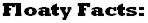

| 27MAY01 | -NEW! I have replaced the multiple banner adds in the site with a single Amazon.com search box. Please support this site with a search or two! |
| 27FEB01 | -By popular demand, I have added a new Links section. Check it out, and let me know if you would like to have your own floaty pen listing! |
| 07OCT00 | -Try out Evite (our latest sponsor: see link below), it's actually quite a cool web site if you've ever tried to arrange an event for a large group of people. |
| 01OCT00 | -We have moved to a new Web server. Our swanky new address is http://www.5th-sun.com/fpotw/ (all right, maybe it's not that swanky but we take what we can get!). Please remember to change your bookmarks or favorites. |
| 20JAN00 | -We have new sponsors...please give 'em a click! |
| 14JAN00 | -Problems with Interlog finally worked out, new site goes online! |
| 03DEC99 | -New design finalized. Problems with Interlog, my current ISP, begin (trust me, you don't want to know the details!). |
| 07JUN99 | -Floaty Pens of the World! site chosen in Yahoo! Canada's Pick of the Week!! |
| 17OCT97 | -Pens from my collection displayed at Boise State University's Idaho Center for the Book in an exhibition titled "Fabulous Floating Pens." |
| 22SEP96 | -Old site last updated. |

|
Site © 2000 Luis V. Aguila |